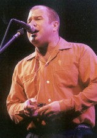

Интервью Дэнниса Карелли с сайта www.harmonicasessions.com

Dennis Carelli: Я знаю что вы родом не из Остина и что вы некоторое время
жили в Чикаго? Но где вы родились?
Gary Primich: Я родился в Чикаго в 1958. Там я и начал интересоваться
блюзом и игрой на гармонике. Я заинтересовался гармоникой еще ребенком, в начале
60-х . Почтовая служба США проводила рекламную акцию "пользуйся почтовым
индексом". Тогда понятие почтового индекса только появлялось в американском
сознании. По телевидению крутили рекламный ролик с Джонни Пулео (Johnny Puleo),
который танцевал вокруг почтового ящика. Это был рекламный ролик "пользуйся
почтовым индексом". И он стал моим кумиром. Я хотел быть Джонни Пулео. Мне было
семь лет.
DC: Впервые слышу о харпере, которого вдохновил Джонни Пулео.
GP: Да, да (Смеется). Это длилось не долго и меня стала притягивать
музыка Мадди Уотерса, Литтл Уолтера, Хаулин Вулфа. Всех Чикагских музыкантов.
Как оказалось в Чикаго было много музыкантов, таких как Биг Уолтер Хортон,
слушая которые стали для меня источником вдохновения.
DC: Вообще интересно, вы родились в Чикаго, увлеклись блюзом в Чикаго,
что же заставило вас позже перебраться в Остин? Вас привлекала музыкальная жизнь
Остина или вам казалось что новое месте будет стимулировать вас в музыкальном
плане?
GP: Ну да, музыкальная жизнь Остина меня на самом деле привлекала. Я
играл повсюду в Чикаго. И саунд Чикагского блюза, который я так любил, более
традиционный саунд, и тогда и сейчас не в ходу там. Музыканты отходили от этого
стиля и брались за любые другие. Так что, не много было шансов играть мой
любимый Чикагский блюз. Поэтому я поехал в Остин, где было заведение Antone's. Я
слушал там Оттиса Раша в сопровождении местной группы, они играли как надо. И я
подумал, что это место мне подходит.
DC: Когда вы решились на смелый шаг стать профессиональным музыкантом?
GP: В начале 80-х. Тогда мне было двадцать и я более или менее
зарабатывал себе на жизнь. Иногда слишком мало для музыканта.
DC: Надеюсь сейчас вы зарабатываете намного больше.
GP: Ну о богатстве речи нет, но я стараюсь.
DC: Помимо Сонни Боя и Литтл Уолтера, и может быть, Уолтера Хорнтона, так
как он был в Чикаго когда вы жили там, кто еще оказал на вас влияние в тот
ранний период, на кого вы смотрели и учились?
GP: В ранний период? Я всегда очень любил джазовую музыку. Мне все
нравилось. Мне нравится множество разных стилей. Я люблю блюз, но мне нравятся
разные стили. Так что все, что казалось мне хорошим, повлияло на меня. Я играл с
музыкантами блюграсс. Я играл с музыкантами старой школы. Я играл в кантри
группах. Я просто делал все что мог, как гастролирующий музыкант, чтобы
заработать. Так что, на меня влияли совершенно разные стили. Я никогда не
говорил "я блюзмен и хочу играть только блюз". Я люблю музыку.
DC: Вы играете на каких либо других инструментах?
GP: Не особо. Я немного играю на гитаре. Балуюсь.
DC: В уединении дома?
GP: Ну да, я играл на паре своих альбомов. Я играю на гитаре на записях
других музыкантов. Но это очень смело с их стороны, позволять мне играть на
гитаре в студии.
DC: Какие гармоники вы предпочитаете?
GP: Я играю на Horner Marine Bands, усовершенствованных Джо Филиско (Joe
Filisko).
DC: А микрофоны? Astatic?
GP: Обычный JT-30 с регулятором громкости.
DC: И естественно, людей интересует, какие усилители вы используете.
Какие-то особенные?
GP: Это либо мой Fender Bassman, либо мой Fender Bandmaster.
DC: Во время гастролей вы используете те же усилители, что и в студии,
или на студии у вас другие?
GP: Мне не очень нравится звук больших усилителей в студии. В студии мне
нравится игать на усилителях поменьше. У меня есть усилитель конца 50-х
Silvertone с одним 10' динамиком, который я использую в студии. Иногда использую
свой Bandmaster. Мне нравятся усилители с не очень высокой выходной мощностью.
DC: Как часто вы обычно играете в первой и третьей позициях?
GP: Ну это зависит от того как пойдет концерт. Конечно, у меня много
песен и в первой, и в третьей позиции, но все бывает по разному, в зависимости
от того, как идет концерт.
DC: Это касается и хроматики тоже?
GP: Да, да. Я немного играю на хроматике. Но опять, все зависит от
конкретного концерта.
DC: В прошлый раз вы приезжали в Колорадо и Нью-Мексико со своей групой?
GP: Конечно. Я всегда гастролирую со своей группой. Это Джим Старборд (
Jim Starboard) на барабанах, Дэйв Веселовски (Dave Wesselowski) на басе, и
"Коротышка" Ленуар ("Shorty" Lenoir) на гитаре.
DC: Чего вы ищете в новом музыканте, если вам требуется замена?
GP: Здравый смысл. (Смеется)
DC: Здравый смысл. Для начала? Или это все?
GP: И надеюсь, что он умеет играть. Естественно, нужен музыкант, который
умеет играть. А насчет то, чего я ищу - он должен знать этот стиль музыки. Мне
не нужен парень, который в течение всей своей жизни ложится спать под "The Best
of Little Walter". Мне вовсе такой не нужен в моей группе. Это конечно здорово.
Но нужно, чтобы у него было практическое знание этой музыки. Но если
по-честному, на самом деле мне нужен человек, с кем я могу ужиться на гастролях.
(Смеется)
DC: Как много вы гастролируете ежегодно?
GP: В этом году немного больше, потому что ситуация с экономикой
дерьмовая. Но обычно я стараюсь давать от 175 до 220 концертов в год. Где-то
так.
DC: Я знаю что в этом году вы планируете поехать В Испанию. Вы каждый год
бываете в Европе?
GP: Да, раз или два в году мы бываем в Европе.
DC: Когда вы на гастролях, где вам нравится бывать? Городок или клуб в
котором вам хочется снова побывать, ведь их так много. Некоторые наверное
вызывают такую реакцию "О, Боже, снова мне туда возвращаться!" а другие такую
"Здорово. Повеселимся от души".
GP: Вот что я вам скажу. Буду предельно откровенен. Я не пытаюсь быть
дипломатом. Каждый концерт отличается от предыдущео. Я получал удовольствие от
игры в таких местах, где вам покажется, что его получить невозможно. И все
складывалось паршиво в тех местах, где, казалось, выступление будет лучшим из
лучших. Так что, мне нравится играть там, где удается хороший концерт,
понимающая публика, и бэнд звучит хорошо. А где именно это происходит - не
важно.
DC: Одна из тайн музыки - это написание песен. Вы начинаете писать песню
с текста? Или с музыкальной идеи, которая превращается в песню?
GP: Обычно я работаю над текстом и мелодией одновременно. Обычно работаю
над каким-то куском текста, который я пытаюсь развить. Мелодия как-бы сама о
себе позаботится. Я более занят составлением текста.
DC: Вы черпали вдохновение от других певцов и авторов?
GP: Да, один из авторов, оказавших на меня влияние - это Мерл Хаггард
(Merle Haggard). Он пишет замечательные песни. И другие блюзовые авторы, как
Дэйв Бартоломью (Dave Bartholomew). Этот замечательный сочинитель песен и
аранжировщик из Нового Орлеана очень сильно на меня повлиял. Также как и Перси
Мэйфилд (Percy Mayfield). Вот они, самые крупные фигуры. Мадди Уотерс тоже. Мне
кажется, он писал замечательные песни.
DC: Теперь о записи. Как долго вы готовитесь, делаете аранжировки, перед
тем, как направиться в студию? Или в большинстве случаев у вас есть только общий
замысел песни?
GP: Я уделяю аранжировке достаточно много времени. Особенно партиям
гитары, потому что я немного умею играть на гитаре и на басу. Я занимаюсь
аранжировкой довольно подробно. Я не говорю ребятам - вы должны сыграть именно
так, но говорю, например, развейте вот этот ритмический рисунок. Можно сыграть
бас вот так в начале. Можно начать с такого рисунка и развить его. В этой песне
веди ритм на тарелке райд, не играй хай-хэте. Таков мой подход к аранжировке
частей песни перед записью. Так что, я большей частью знаю, что я хочу услышать.
Я думаю, очень важно заранее продумать все партии. Особенно, если на записи есть
две гитары или другие инструменты. Нужно чтобы оставалось пространство. Вы же не
хотите, чтобы все играли в одном и том же промежутке. Надо быть уверенным, что
используется только нужное место.
DC: Теперь об инструментальных темах. Какая часть возникает спонтанно в
процессе импровизации в студии, а какая придумывается заранее? Вы придумываете
только основную тему и затем развиваете ее по ходу?
GP: Большинство моих инструментальных тем написаны в процессе
импровизации. Как би-боп песни. Как песни Чарли Паркера.
DC: Есть у вас секреты записи, которыми вы хотите поделиться?
GP: О, Господи (смеется).
DC: У вас вероятно есть секреты, вопрос в том, хотите ли вы ими
поделиться?
GP: Нет, нет, нет, у меня вовсе никаких секретов нет. Единственный секрет
- найдите хорошего звукорежиссера. Секрет в том , чтобы найти звукорежиссера
разнопланового, желающего экспериментировать. В этом ключ к созданию хорошего
звука в студии.
DC: И в заключение, Гэри, какой совет вы дадите начинающим харперам и
продвинутым музыкантам?
GP: Новичку важно выучиться двум вещам. Первое - научиться использовать
свой слух. Научиться подбирать мелодии по слуху. Натренировать слух так, чтобы
распознавать, что и как играет Сонни Бой Уильямсон. Надо заставлять себя
пользоваться слухом. Я бы это особенно посоветовал начинающему, это не сравнимо
с неосознанным считыванием с листа. Надо научиться пользоваться слухом.
Продвинутым музыкантом я посоветую пользоваться слухом, чтобы имитировать
звучание других инструментов, пробровать сыграть инструментальную тему,
написанную для другого инструмента, посмотреть как все будет укладываться. И
пытаться что-то из этого для себя вынести.
DC: Гэри, спасибо большое за то, что уделили нам время и поделились мыслями с нашими читателями.
Перевод Арсена Шомахова
Оригинал интервью